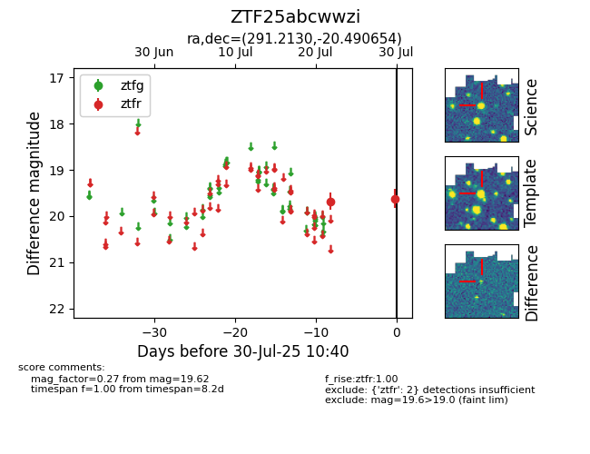

Target ZTF25abcwwzi at 2025-07-30 10:40, see:
FINK: fink-portal.org/ZTF25abcwwzi
Lasair: lasair-ztf.lsst.ac.uk/objects/ZTF25abcwwzi
ALeRCE: alerce.online/object/ZTF25abcwwzi
alt names
ZTF25abcwwzi (ztf,fink)
coordinates:
equatorial (ra, dec) = (291.2130,-20.49065)
galactic (l, b) = (17.8652,-16.30414)
photometry
last ztfr=19.62
2 ztfr detections
